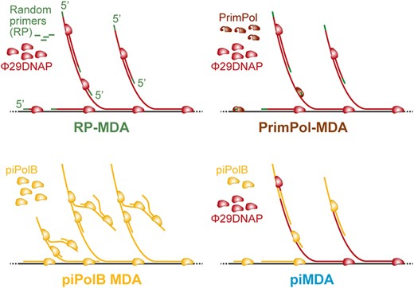

Lab news
Keep updated on our 𝕏 timeline.
News about Papers, Blog posts, fellowships…
November 5, 2024 - Our paper in UAM Gazette!
The Scientific Culture Unit at UAM (Unidad de Cultura Científica, UCC) help us go gain a broader difusion of our work and published a note about our recent paper (in Spanish): https://www.uam.es/uam/investigacion/cultura-cientifica/noticias/bacterias-
This note has been posted in the UAM social media accounts and republished by other news portals, including versions in Madrid+d and a version in English at MyScience portal.
October 15, 2024 - New Paper Alert!
We just published a terrific manuscript by Víctor on NAR!
What does it mean?
MGEs promote the spread of antimicrobial resistance, virulence, and defense genes, contributing to bacterial adaptation via genome dynamics. Several groups of plasmids and viruses encode mechanisms for autonomous or semi-autonomous DNA transfer. However, other MGEs also contribute to the high gene flux in bacterial genomes, relying on these elements or unknown mechanisms for mobilization, hindering analysis of their role in genome plasticity. These elements have been recently referred to as “hitchhikers” and can include mobilizable and non-mobilizable plasmids, and integrative elements (Ares-Arroyo et al. 2024.).
Pipolins would possible be among the more enigmatic hitchers GMEs. Some years ago, we identified these elements as integrative elements with a patchy distribution in most major bacteria phyla and also in some mitochondria genomes. Here, in order to unveil the real extent of pipolins in Bacteria and analyze their diversity, Víctor performed a comprehensive screening of pipolins in bacterial genomes, analyzing their structure, gene content, and exchange rates with other MGEs. Using our tool ExplorePipolin (Chuprikova et al. 2022), Pipolins were detected across bacterial phyla, being particularly abundant in Gammaproteobacteria (mainly in Escherichia and Vibrio), and also prevalent in several distant genera, such as Aeromonas, Limosilactobacillus or Pseudosulfitobacter. Most pipolins were integrative elements with direct repeats, sharing tRNA and genomic loci with other MGEs. Recombinase switching or loss allowed novel insertion sites and transition between integrative mobile elements (IME-pipolins) and plasmids (plasmid-pipolins).
Previous studies identified restriction-modification systems and other nucleic acid metabolism proteins in pipolins, alongside numerous genes with unknown functions. Here, we show that pipolins are enriched for defense systems, with over 15% of genes annotated by PADLOC, compared to 1.5% and 3% in plasmids and conjugative integrative mobile genetic elements (ciMGEs), respectively. The pipolin structure, with minimal core genes and a large cargo module of defense genes, resembles other defense islands recently reported. Moreover, he performed the most comprehensive weighted gene relatedness ratio (wGRR, Cury et al. 2018) analysis between integrated defense islands and extrachromosomal elements, disclosing frequent gene exchange between pipolins, phages, and ciMGEs, suggesting not only high abundance but also extensive horizontal transfer of defense genes.
Altogether, this study provides a detailed characterization of pipolins and proposes a two-speed mechanism for diversification and mobilization of bacterial defense genes at the population level. Thus, we hypothesize that pipolins exemplify a class of defense “hitchhikers” can accumulate quickly a large orthogonal reservoir of defense systems, favored by their parasitic mobility. The interaction with new, autonomous MGEs might trigger these defense factors or, when immune, would eventually allow the acquisition of new defense genes and potentially mobilize the “hitchhikers”, suggesting the existence of complementary defense gene flow mechanisms in bacteria populations.
November 23, 2023 - Modesto Promoted to PPL (Associate Professor)
We are happy to share that our PI was promoted to “Profesor Permanente Laboral”, a permanent position in teaching and research. 🍾🍾
August 21, 2023 - New Paper Alert!
It took some time, but our new method for whole genome and metagenomes DNA amplification is just published in NAR Genomics and Bioinformatics: https://academic.oup.com/nargab/article/5/3/lqad073/7246555

\(\\\) This work was led by @CarlosDOC_, with the participation of @karmayoral from the lab. We were also very fortunate to be able to count on the collaboration of Dr. Conceiçao Egas from Biocant-CNC (Portugal).
In this work, we used the piPolB to develop new methods for whole genome and metagenome amplification (WGA). We used the piPolB in two different protocols: (1) piPolB MDA and (2) piMDA, with piPolB in combination with a Φ29 DNA polymerase (Φ29DNAP). In short, the second proved to be a great protocol, outperforming all previously available methods. In particular, our piMDA method (piPolB + Φ29DNAP) provides not only high DNA yield but also a very competent and unbiased coverage for sequences with high GC content, usually the Achilles heel of most MDA methods.
Along the way, we found that piPolB is capable of ab initio DNA synthesis, without DNA primers or templates. This activity has been described before for other polymerases, especially thermoresistant enzymes, but it is often neglected in the literature. Ab initio DNA synthesis by piPolB is negligible for optimized piMDA methods, but is of importance for piPolB solo amplifications. Ongoing work aims to understand how this spurious DNA synthesis is regulated and control it to developing improved piPolB-base MDA methodologies.
We have performed deep sequencing and a detailed comparison of non-amplified samples with samples that were amplified with piPolB MDA and piMDA, with and without a previous alkaline denaturation step. Additionally, we compared the piPolB-based methods with two commercially available kits based on Φ29DNAP, namely RepliG (Qiagen) for Random-Primers MDA and TruePrime (4BaseBio) for a primase-based MDA.
All in all, we can conclude that piMDA methods enable proficient WGA of a wide range of genomes for downstream applications, including those related to the study of microbiome diversity in different environments, especially in environments where high-GC microorganisms, such as halophiles or thermophiles, would predominate. In addition, our results suggest that piMDA has great potential for application in microbiome studies involving DNA amplification, such as those using single-cell metagenomics to reconstruct strain-resolved genomes of microbial communities at once, at the risk of missing poorly represented sequences with high GC content.
Finally, we would like to dedicate this work to the memory of Professor Margarita Salas, for her long and inspiring support in our careers and for her seminal contributions to the discovery of piPolB and the early development of this project.
June 15, 2023 - European patent application for piPolB granted!
The WIPO site publishes today the decision to grant the European Patent of piPolB, entitled “Primer-independent DNA polymerases and their use for DNA synthesis”, with ref. EP305029628.
May 29, 2023 - New Paper Alert
We are happy to share our new review on DNA polymerases for whole (meta)genome amplification: https://mdpi.com/1422-0067/24/11/9331 by @CarlosDOC_ and @mredrejo
Jul 23, 2022 - CIVIS Summer School: Bioinformatics for non bioinformaticians.
Modesto was one of the lectures in this great summer school @uni_tue, hosted by Profs. Thorsten Schmidt and Andre F. Martins.
Jul 27, 2020 - Pipolins provided an opportunity to study diversity and variability of self-replicative genetic mobile elements in circulating bacteria
Behind the paper in Nature Microbiology Community. Link